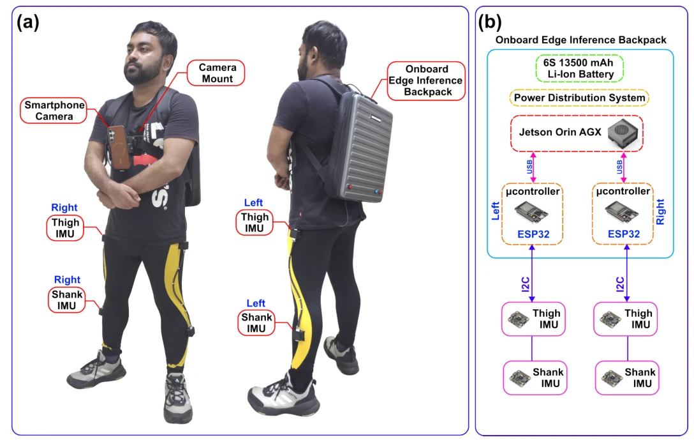

Wearable robotics
Tendon-Driven Elbow Exosuit
Integrated upper-limb assistance with biosignal-based admittance control
Research platforms/September 2024 – January 2026
Tendon-driven plantarflexion assistance and a synchronized human-in-the-loop testbed
Indian Institute of Technology Delhi · Department of Applied Mechanics
The project
This IIT Delhi work connects a tendon-driven ankle-assistance platform to a laboratory infrastructure for studying human–robot interaction. The ankle exoskeleton executes plantarflexion assistance profiles derived from offline biomechanical simulation, with FSR-based gait-event detection used to trigger their delivery.
The associated HIL testbed synchronizes exosuit sensing with an instrumented treadmill, motion capture, EMG, and a metabolic analyzer. The current portfolio account is grounded in the CV; detailed prototype media, profile-generation methods, synchronization implementation, and experimental results are pending. This tendon-driven platform is distinct from the earlier pneumatic ankle-assistance experiments in the soft-actuation papers.
Wearable hardware and transmission
The ankle platform uses tendon transmission to deliver plantarflexion assistance. Its development joins the wearable hardware to the actuation and sensing needed to execute a timed assistance profile during walking, as documented in the IIT Delhi project description.
The current illustration explains the functional path from actuation to ankle assistance. The actual actuator arrangement, transmission geometry, wearable interfaces, and measured force or torque capability require authentic project photographs and technical specifications before they can be described more precisely.
Assistance profile and event timing
Offline biomechanical simulation provides the basis for the plantarflexion profiles executed by the exoskeleton. FSR-based gait-event detection supplies the timing reference that connects these predefined profiles to a wearer’s steps.
This establishes the reported path from offline profile design to online execution. The simulation model, optimization criterion, profile parameters, gait-event rules, and adaptation across walking conditions remain inputs for the detailed methods account. The current description does not imply that a learned or HIL-optimized controller was already evaluated on this platform.
Gait-laboratory infrastructure
The laboratory testbed brings exosuit signals together with an instrumented treadmill, motion capture, EMG, and a metabolic analyzer. These instruments make complementary aspects of an assistance experiment observable: external loading, movement, muscle activity, physiological cost, and the robot’s own sensing.
My work developed the synchronization infrastructure for HIL experiments across these sources. Exact timing methods, acquisition rates, experiment protocols, and outcomes will be documented when the project material is supplied. The infrastructure supports the synchronized study of robot assistance and the wearer’s biomechanical and physiological response.
Connected work
This project is described in the supplied CV. A dedicated publication or technical report can be linked here when available.
Read CV project summaryAdd authentic hardware photographs, assistance clips, and gait-laboratory images with accurate equipment identification.
Confirm the biomechanical model, derived profile, actuation layout, gait-event logic, and measured transmission behavior.
Provide acquisition/synchronization details, completed protocols, quantitative results, and any related publication or report.
Keep exploring
Wearable robotics
Integrated upper-limb assistance with biosignal-based admittance control

Research platforms
A modular ROS 2 architecture for deployment and human-in-the-loop experimentation

Wearable robotics
A causal visuo-inertial pipeline for terrain, locomotion, gait phase, and speed